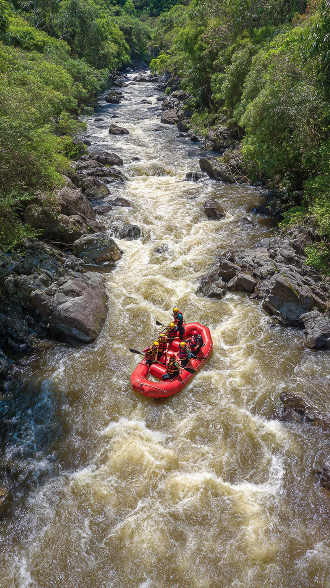
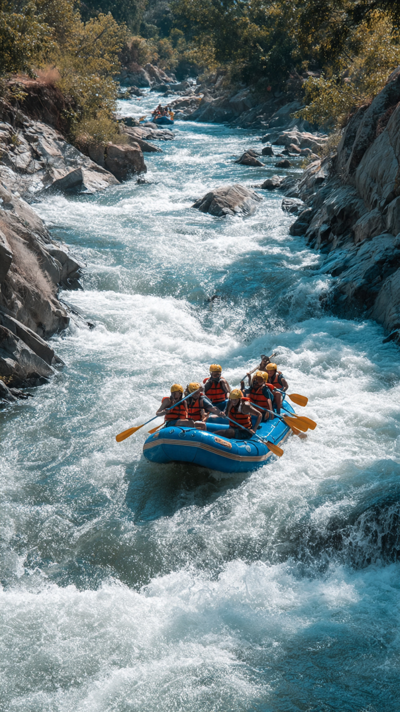

Nosso propósito é proporcionar experiências seguras e emocionantes nos rios, promovendo o trabalho em equipe e o respeito pela natureza. Venha viver a aventura com a gente!

Nosso propósito é proporcionar experiências seguras e emocionantes nos rios, promovendo o trabalho em equipe e o respeito pela natureza. Venha viver a aventura com a gente!
A V.C Rafting nasceu em 2010 com um propósito: levar pessoas para viver aventuras inesquecíveis em meio à natureza. Fundada por Victor José, apaixonado por esportes radicais e pelo rio. Começamos com apenas um bote e hoje somos referência em passeios de rafting, oferecendo segurança, diversão e memórias inesquecíveis para toda a família.

